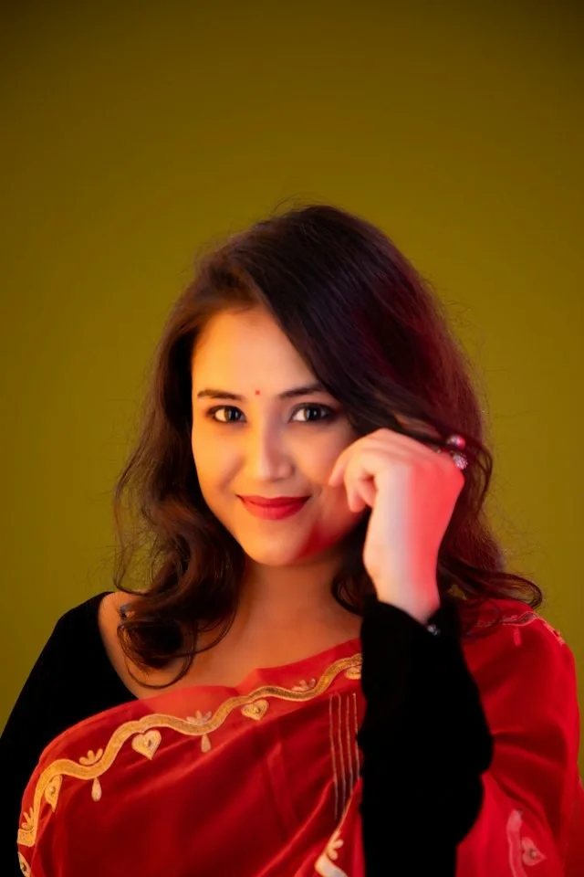

- Age
- 28
- Location
- New Delhi
- Occupation
- HR executive
- Buys
- Mostly online, on phone
Where she discovers brands
InstagramSearchExhibitions
Proto-persona, online buyer
Aaditi Sharma
“It’s so hard to tell if it’s handwoven or machine-made.”
Aaditi is an urban professional who loves Indian textiles. She buys Banarasi sarees for weddings and festivals, from exhibitions or boutiques she trusts. She values craft but rarely gets the story or a way to verify what she buys. She finds brands on social media and will engage online if it feels personal and real.
Goals
- Buy an authentic, handwoven Banarasi saree
- Support real artisans, not just retailers
- Know the story behind what she wears
Pain points
- Can’t tell handloom from power-loom
- No way to verify where a saree comes from
- Stores rarely share artisan information
- Prices feel high and unexplained
Needs
- Proof of handloom and quality
- Photos, videos and the maker’s story
- A simple purchase and delivery
- Ways to connect with the craft
What would win her trust
- Artisan profiles and process videos
- GI tag or Handloom Mark details
- Knowing her money reaches the weaver